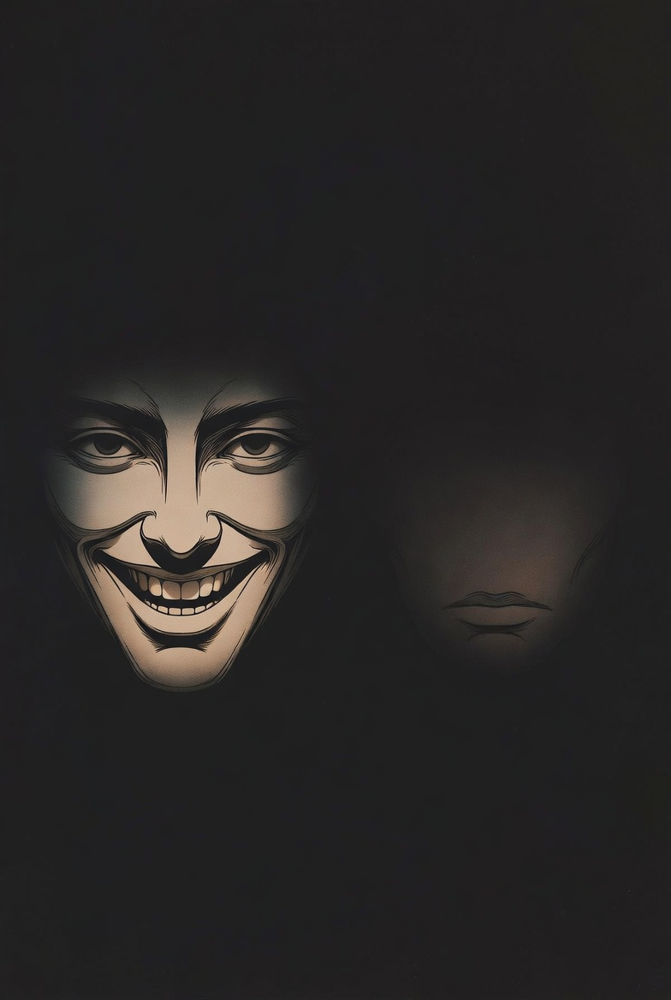

Those are the 2 most powerful / effective habits I use in daily life especially while dealing with
- Manipulative
- Annoying
- And Provoking
Ok I know you're probably thinking what does he mean
So I'mma break it down for you, let me start with the question
"WHY DO YOU THINK SOMEONE SAYS SOMETHING HURTFUL OR PROVOKING TO YOU"
Well if you don't know...the major aim they are trying to achieve is to
1. Make you uncomfortable
2. Get A negative reaction (maybe you attacking back or trying to be defensive)
So the most effective way to respond is to not show that you are uncomfortable and at the same time starve them of the reaction they are looking for
The best way to do that is just smile and say nothing (stay silent).

This immediately makes them rethink (how's he so calm , did he not hear me )
Yh, that small smile and silence always does the magic for me.
At first it was hard to control myself, but now it has become my normal way. The more I practice it, the more peace I feel inside.
Personally, this habit has saved me from plenty drama and unnecessary arguments. I no longer waste my energy on people wey just dey look for my reaction.
This is one of the biggest ways I have changed — learning to protect my peace by just smiling or staying silent.
The end.
Yh, thanks for reading another real chapter of my life. You can check out more articles from the menu.